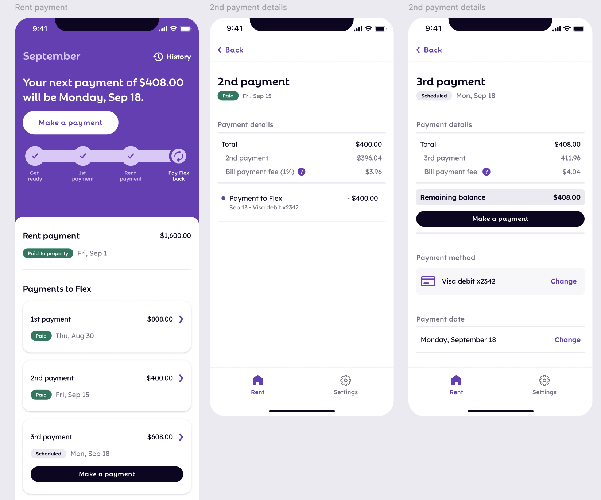

Flex partial payments
January 2024 to March 2024 • Flex
Flex helps customers split their rent payment into two installments over the course of a month instead of having to pay their largest (!) recurring cost all in one chunk. Users pay their first installment when rent is due, then Flex pays their rent directly their property using this first payment and a credit line. They repay Flex later in the month.
I was the lead designer working on risk initiatives with a product manager partner and a small-but-mighty team of engineers.
Problem
Flex users are typically struggling to smooth their cashflow, and need as much flexibility as they can get. We often see users fail or reschedule their 2nd payment to Flex and change their card on file as they juggle their bills throughout the month.
From the business side, the 2nd payment is the loan repayment, and users missing this payment means impact to our loss rates. Our risk team set out to build something to recover some losses.
About 1,000 users write to our support team each month asking to split their 2nd payment into more installments, which is not something that we advertise that we do, so we had relatively high conviction that allowing users make repayments in partial amounts would be impactful for both our users and the business.
Exploration
While simple on the surface, we ran into some deep complexities in our core experience. Our explorations were largely driven by the desire to distill those complexities into a simple user experience. I’ll dive into one as an example.
Structure of payments
Most of our core UX relies on the fact that 2nd payment = loan amount. How does a new payment interact with this structure?
One option was to make progress toward the total repayment amount and nest partial repayments under the larger total.
Another was to “close out” the 2nd payment and create a 3rd.
Ultimately, after pressure testing both options and running some guerilla research with friends, the latter option felt most intuitive and scalable.
Other complexities
- Scheduling the remaining balance: When do we try to collect the rest and how does it interact with our existing charge logic and reschedule flow?
- Fees: Making partial payments introduces the possibility of mixed payment methods (e.g. one payment with debit, one with credit) and some wacky fee edge cases
I won’t dive into the details of each exploration, but here is a whiteboard of a bunch of math and edge cases we worked on in the process.
The final design
The flow where users make payments kept a familiar structure, but introduced a new selection for users to enter a custom payment amount.
To make it easier for customers to understand their money movement during the month, we structured the payments to mark the partial payment as complete. All actions (including making another payment and rescheduling) were moved to the remaining “open” payment.
Results & takeaways
About 4% of all users adopted this feature and our loss rates improved by 1.9bps. Sounds small, but that is huge impact!
Our organic adoption of this feature continues to climb, and we have since introduced more entry points to encourage users to pay down their balances before they’re due.
What felt like a straightforward design problem (how hard could adding a number input to a single screen be?) resulted in a lot of behind-the-scenes complexity. Our MVP solution wasn’t perfect, but we identified some clear areas for improvement in the future.